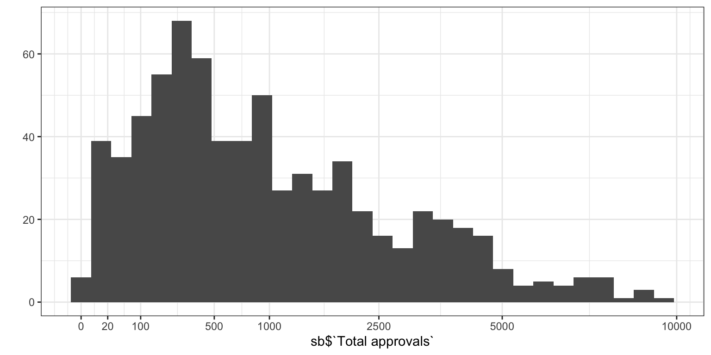
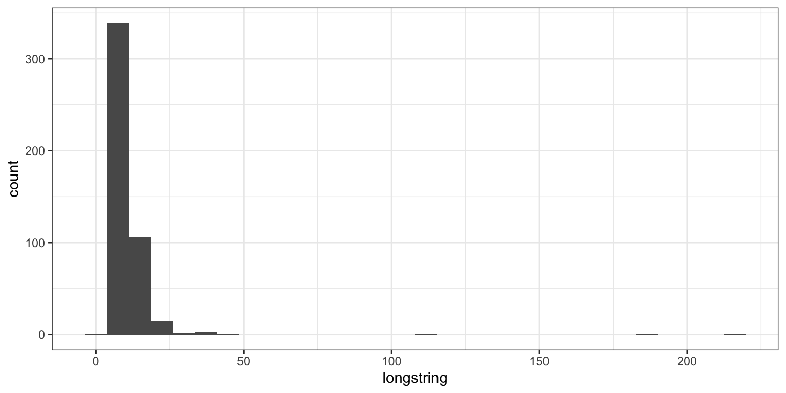
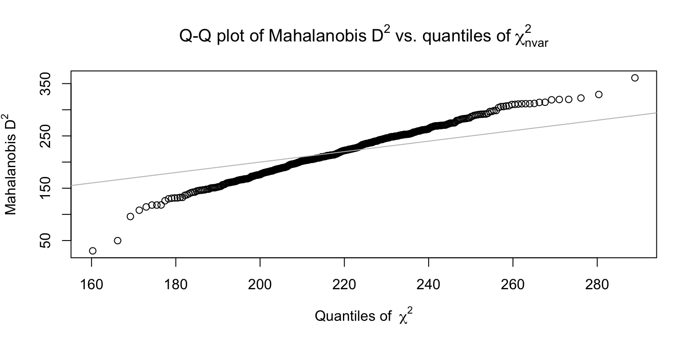
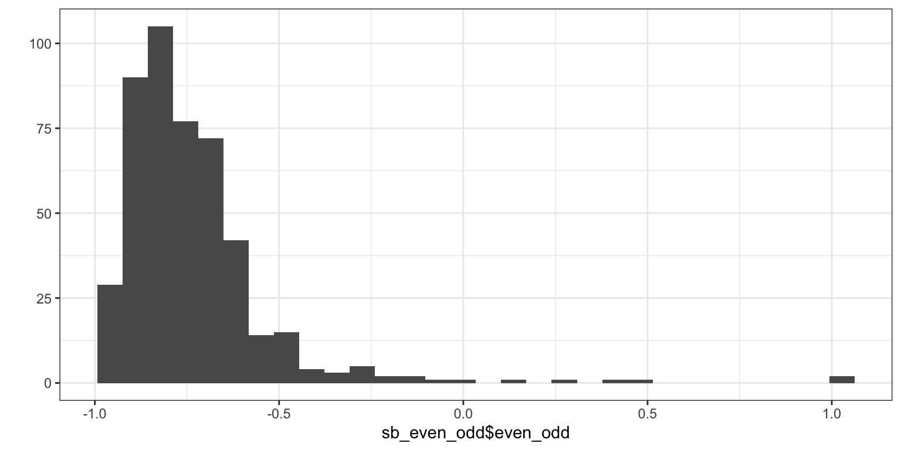
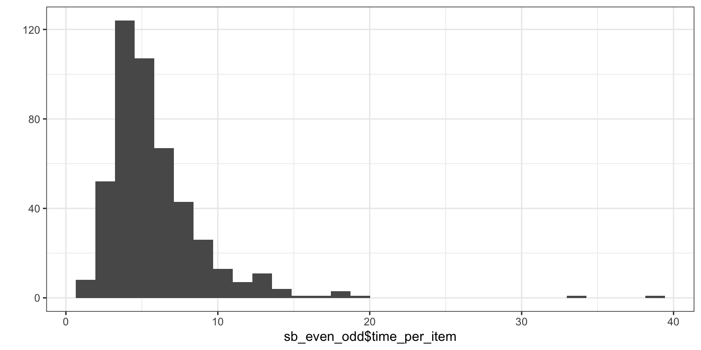
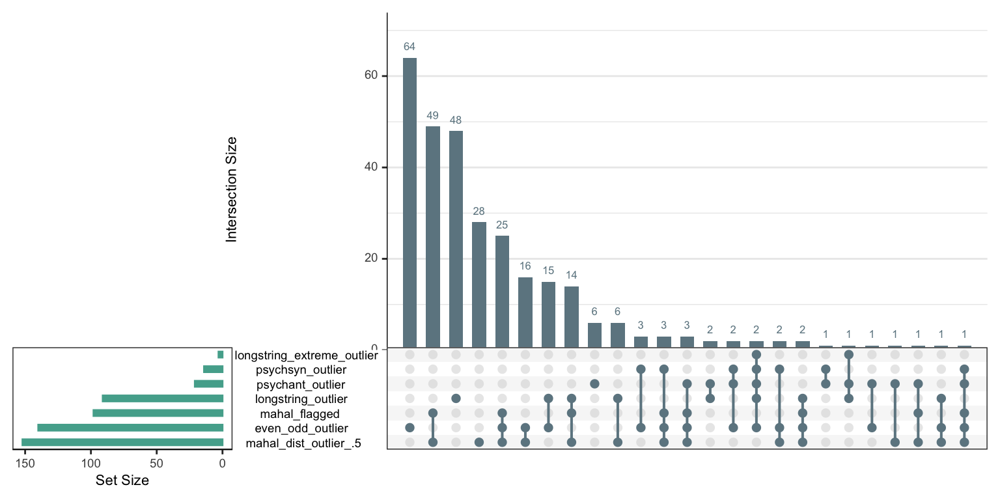
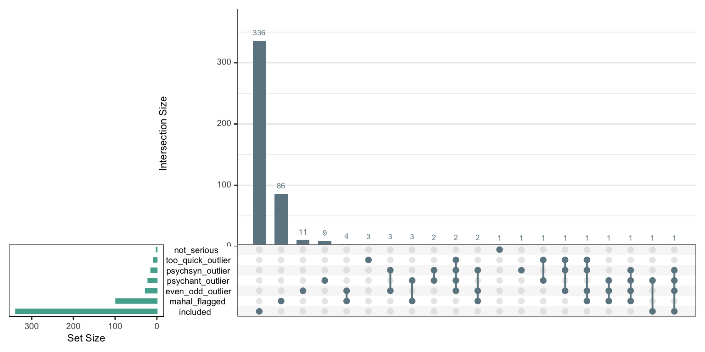

knitr::opts_chunk$set(
message = FALSE,
warning = TRUE,
include = TRUE,
error = TRUE,
fig.width = 8,
fig.height = 4
)library(tidyverse)
library(haven)
library(labelled)
library(readr)
# windowsFonts(Times = windowsFont("Times New Roman"))
ggplot2::theme_set(ggplot2::theme_bw())
options(scipen = 999,
digits = 2)sb <- read_rds("data/processed/sosci_labelled.rds")
nationalities <- sb$Nationality
nationalities <- nationalities[!nationalities %in% c("CONSENT_REVOKED","DATA_EXPIRED")]
table(nationalities)## nationalities
## Azerbaijan Bosnia and Herzegovina Canada
## 1 1 2
## China Colombia Cuba
## 2 1 1
## Ecuador Germany Honduras
## 1 1 1
## Hungary India Iraq
## 2 2 1
## Italy Jordan Kenya
## 1 1 1
## Korea Lebanon Malaysia
## 1 1 1
## Mexico Nicaragua Nigeria
## 5 1 7
## Pakistan Peru Philippines
## 1 1 1
## Portugal Romania Russian Federation
## 1 1 1
## United Kingdom United States Uzbekistan
## 7 554 1
## Vietnam
## 1## nationalities
## Azerbaijan Bosnia and Herzegovina Canada
## 0.0017 0.0017 0.0033
## China Colombia Cuba
## 0.0033 0.0017 0.0017
## Ecuador Germany Honduras
## 0.0017 0.0017 0.0017
## Hungary India Iraq
## 0.0033 0.0033 0.0017
## Italy Jordan Kenya
## 0.0017 0.0017 0.0017
## Korea Lebanon Malaysia
## 0.0017 0.0017 0.0017
## Mexico Nicaragua Nigeria
## 0.0083 0.0017 0.0116
## Pakistan Peru Philippines
## 0.0017 0.0017 0.0017
## Portugal Romania Russian Federation
## 0.0017 0.0017 0.0017
## United Kingdom United States Uzbekistan
## 0.0116 0.9172 0.0017
## Vietnam
## 0.0017##
## CONSENT_REVOKED United States
## 114 605##
## N/A: not in the US Alabama Alaska Arizona
## 98 11 1 6
## Arkansas California Colorado Connecticut
## 2 64 9 8
## Delaware Florida Georgia Hawaii
## 5 29 13 2
## Idaho Illinois Indiana Iowa
## 2 35 12 9
## Kansas Kentucky Louisiana Maine
## 5 10 12 1
## Maryland Massachusetts Michigan Minnesota
## 7 15 27 15
## Mississippi Missouri Montana Nebraska
## 4 6 0 1
## Nevada New Hampshire New Jersey New Mexico
## 1 4 13 2
## New York North Carolina North Dakota Ohio
## 57 14 3 21
## Oklahoma Oregon Pennsylvania Rhode Island
## 10 6 34 6
## South Carolina South Dakota Tennessee Texas
## 4 0 13 34
## Utah Vermont Virginia Washington
## 2 1 15 10
## West Virginia Wisconsin Wyoming [NA] Not answered
## 4 9 0 0##
## N/A: not in the US Alabama Alaska Arizona
## 0 11 0 15
## Arkansas California Colorado Connecticut
## 1 76 9 7
## Delaware Florida Georgia Hawaii
## 5 54 18 1
## Idaho Illinois Indiana Iowa
## 1 26 20 7
## Kansas Kentucky Louisiana Maine
## 7 14 10 1
## Maryland Massachusetts Michigan Minnesota
## 7 7 21 14
## Mississippi Missouri Montana Nebraska
## 6 5 1 1
## Nevada New Hampshire New Jersey New Mexico
## 6 5 20 1
## New York North Carolina North Dakota Ohio
## 54 27 3 21
## Oklahoma Oregon Pennsylvania Rhode Island
## 10 9 29 3
## South Carolina South Dakota Tennessee Texas
## 7 0 19 55
## Utah Vermont Virginia Washington
## 4 1 20 15
## West Virginia Wisconsin Wyoming [NA] Not answered
## 8 10 0 0## [1] 697## Warning: `qplot()` was deprecated in ggplot2 3.4.0.
## This warning is displayed once every 8 hours.
## Call `lifecycle::last_lifecycle_warnings()` to see where this warning was
## generated.## Warning: Removed 7 rows containing non-finite outside the scale range
## (`stat_bin()`).
## [1] 1## [1] 40## [1] 5.5main_qs <- c("AAID", "PANAS", "PAQ", "PSS", "NEPS", "ULS", "FCV", "DAQ", "CESD", "HEXACO", "OCIR", "PTQ", "RAAS", "KSA", "SAS", "MFQ", "CQ")
sb_complete_cases_main_qs <- sb %>%
filter(if_all(starts_with(main_qs), ~ !is.na(.x)))
sb_main <- sb_complete_cases_main_qs %>%
select(-ends_with("_R"))
sb_items_only <- sb_complete_cases_main_qs %>%
select(starts_with(main_qs))
sb_main$`Submission id`[str_length(sb_main$`Submission id`) < 20]## [1] NA NA NA NA## [1] 470470 have full main questionnaire data
We will follow Goldammer et al.(2020) and Yentes (2020) recommendations for identifying and excluding participants exhibiting problematic response patterns (e.g., careless responding). Accordingly, participants will be excluded if any of the following thresholds are exceeded:
- longstring (≥ .40 SD above mean),
- multivariate outlier statistic using Mahalanobis distance (≥ .50 SD above mean),
- psychometric synonyms (r < .60),
- psychometric antonyms (r ≥ -.40),
- even-odd-index (≥ .20 SD above mean).
inv_items <- rio::import("https://docs.google.com/spreadsheets/d/16QcRLP5BUn1Cmtr0e_XRdjr1Wg-EHSMSGmgZO1M3tNM/edit?gid=0#gid=0", which = 2) %>% select(item = id, reversed)
inv_items <- inv_items %>%
filter(reversed) %>%
pull(item) %>%
intersect(names(sb_main))
# Reverse code items based on "reversed" column in "inv_items"
sb_main_inverted <- sb_main %>%
mutate(across(c(all_of(inv_items), ULS8_03, ULS8_06), ~ 7 + 1 - as.numeric(.)))
# data.frame(sb_main$AAID_01, sb_main$AAID_01)calculating them based on main questionnaires only (excluding work related ones for consistency)
sb_longstring <- sb_main %>%
mutate(longstring = longstring(sb_main %>% select(starts_with(main_qs))),
longstring_mean = mean(longstring),
longstring_sd = sd(longstring),
longstring_outlier = if_else(longstring >= longstring_mean + .4 * longstring_sd, T, F)) %>%
relocate(c("longstring", "longstring_outlier"), .after = "Submission id")
ggplot(sb_longstring, aes(longstring)) + geom_histogram()
## [1] 91ouch
sb_mahal <- sb_longstring %>%
mutate(mahal_dist = mahad(sb_main %>% select(starts_with(main_qs))),
mahal_flagged = mahad(sb_main %>% select(starts_with(main_qs)), flag = TRUE, confidence = .95)$flagged,
mahal_dist_mean = mean(mahal_dist),
mahal_dist_sd = sd(mahal_dist),
mahal_dist_outlier_.5 = if_else(mahal_dist >= mahal_dist_mean + .5 * mahal_dist_sd, T, F),
mahal_dist_outlier_1.5 = if_else(mahal_dist >= mahal_dist_mean + 1.5 * mahal_dist_sd, T, F))
## [1] 152## [1] 33## [1] 98.22 instead of .6 as cut off
## # A tibble: 47,961 × 3
## var1 var2 cor
## <fct> <fct> <dbl>
## 1 CESD_18 CESD_06 0.838
## 2 CESD_16 CESD_12 0.813
## 3 PTQ_06 PTQ_01 0.797
## 4 CESD_06 CESD_03 0.792
## 5 PTQ_11 PTQ_01 0.789
## 6 ULS8_05 ULS8_04 0.786
## 7 PTQ_13 PTQ_08 0.776
## 8 PTQ_11 PTQ_03 0.772
## 9 CESD_09 CESD_06 0.770
## 10 PTQ_11 PTQ_08 0.769
## # ℹ 47,951 more rowsk=341 psychometric synonyms found.
# sb_psychsyn <- sb_mahal %>%
# mutate(psychsyn = psychsyn(sb_main %>% select(id, starts_with(main_qs))),
# psychsyn_mean = mean(psychsyn, na.rm = T),
# psychsyn_sd = sd(psychsyn, na.rm = T),
# psychsyn_outlier = if_else(psychsyn < psychsyn_mean - .5 * psychsyn_sd, T, F)) %>%
# relocate(c("psychsyn", "psychsyn_outlier"), .after = "id")
#
# sum(sb_psychsyn$psychsyn_outlier, na.rm = T)
sb_psychsyn <- sb_mahal %>%
mutate(psychsyn = psychsyn(sb_main %>% select(starts_with(main_qs))),
psychsyn_mean = mean(psychsyn, na.rm = T),
psychsyn_sd = sd(psychsyn, na.rm = T),
psychsyn_outlier = if_else(psychsyn < .22, T, F)) %>%
relocate(c("psychsyn", "psychsyn_outlier"), .after = "Submission id")
sum(sb_psychsyn$psychsyn_outlier, na.rm = T)## [1] 12two NAs (probably those with extreme longstring and so no within person variance)
-.03 instead of -.4 as cut off
## # A tibble: 47,961 × 3
## var1 var2 cor
## <fct> <fct> <dbl>
## 1 RAAS_05 RAAS_02 -0.645
## 2 CESD_16 CESD_06 -0.632
## 3 CESD_18 CESD_12 -0.627
## 4 RAAS_14 RAAS_07 -0.622
## 5 CESD_12 CESD_06 -0.621
## 6 CESD_12 CESD_09 -0.619
## 7 CESD_16 CESD_09 -0.619
## 8 CESD_18 CESD_16 -0.610
## 9 CESD_12 CESD_03 -0.595
## 10 CESD_16 CESD_03 -0.582
## # ℹ 47,951 more rows## [1] 320k=320 psychometric antonyms found.
sb_psychant <- sb_psychsyn %>%
mutate(psychant = psychant(sb_main %>% select(starts_with(main_qs)), critval = -.4),
psychant_mean = mean(psychant, na.rm = T),
psychant_sd = sd(psychant, na.rm = T),
psychant_outlier = if_else(psychant > -.03, T, F)) %>%
relocate(c("psychant", "psychant_outlier"), .after = "Submission id")
sum(sb_psychant$psychant_outlier, na.rm = T)## [1] 18sb_even_odd <- sb_psychant %>%
mutate(even_odd = evenodd(sb_main %>% select(`Submission id`, starts_with(main_qs)),factors = c(6, 8, 10, 14, 10, 8, 7, 18, 20, 30, 18, 15, 11, 09, 09, 11, 16)),
even_odd_mean = mean(even_odd, na.rm = T),
even_odd_sd = sd(even_odd, na.rm = T),
even_odd_outlier = if_else(even_odd >= even_odd_mean + .2 * even_odd_sd, T, F)) %>%
relocate(c("even_odd", "even_odd_outlier"), .after = "Submission id") ## Warning: There were 472 warnings in `mutate()`.
## The first warning was:
## ℹ In argument: `even_odd = evenodd(...)`.
## Caused by warning in `evenodd()`:
## ! Computation of even-odd has changed for consistency of interpretation
## with other indices. This change occurred in version 1.2.0. A higher
## score now indicates a greater likelihood of careless responding. If
## you have previously written code to cut score based on the output of
## this function, you should revise that code accordingly.
## ℹ Run `dplyr::last_dplyr_warnings()` to see the 471 remaining warnings.## # A tibble: 1 × 2
## even_odd_mean even_odd_sd
## <dbl> <dbl>
## 1 -0.734 0.214## Warning: Removed 2 rows containing non-finite outside the scale range
## (`stat_bin()`).
## [1] 0.17 0.28 0.40 0.49 1.00 1.00## [1] 138sb_even_odd$time_per_item <- sb_complete_cases_main_qs$TIME005 / (rowSums(!is.na(sb_items_only))-1)
qplot(sb_even_odd$time_per_item)
## [1] 8library(UpSetR)
sb_even_odd$longstring_extreme_outlier <- sb_even_odd$longstring > 100
criteria <- sb_even_odd %>%
select(longstring_outlier,longstring_extreme_outlier, mahal_dist_outlier_.5, mahal_flagged, psychsyn_outlier, psychant_outlier, even_odd_outlier) %>%
as.data.frame() %>%
mutate_all(~ if_else(is.na(.), 1, . + 0))
upset(criteria, ncol(criteria), 40, show.numbers = "yes", order.by = "freq",
main.bar.color = "#6E8691",
matrix.color = "#6E8691",
sets.bar.color = "#53AC9B")
# preregistered
sb_even_odd %>%
filter(if_any(c(longstring_outlier, mahal_dist_outlier_.5, psychsyn_outlier, psychant_outlier, even_odd_outlier), ~ . == TRUE)) %>% nrow()## [1] 297# as above without longstring
sb_even_odd %>%
filter(if_any(c(mahal_dist_outlier_.5, psychsyn_outlier, psychant_outlier, even_odd_outlier), ~ . == TRUE)) %>% nrow()## [1] 246# with the mahal flagging as in the careless package
sb_even_odd %>%
filter(!psychsyn_outlier, !psychant_outlier, !mahal_flagged, even_odd < -.45, time_per_item >= 2) %>% nrow()## [1] 337sb_even_odd %>%
filter(!psychsyn_outlier, !psychant_outlier, !mahal_flagged, !(even_odd_outlier & mahal_dist_outlier_.5)) %>% nrow()## [1] 334sb_even_odd %>%
filter(!psychsyn_outlier, !psychant_outlier, !mahal_flagged, !even_odd_outlier) %>% nrow()## [1] 255294/465 are excluded
sb_even_odd <- sb_even_odd %>%
mutate(even_odd_outlier = even_odd >= -.45) %>%
mutate(included = !mahal_flagged & !psychsyn_outlier & !psychant_outlier & !even_odd_outlier &
!not_serious & !too_quick_outlier)
criteria <- sb_even_odd %>%
select(mahal_flagged, psychsyn_outlier, psychant_outlier, even_odd_outlier,
not_serious, too_quick_outlier, included) %>%
as.data.frame() %>%
mutate_all(~ if_else(is.na(.), 1, . + 0))
cor(criteria)## mahal_flagged psychsyn_outlier psychant_outlier
## mahal_flagged 1.000 0.0333 0.016
## psychsyn_outlier 0.033 1.0000 0.326
## psychant_outlier 0.016 0.3256 1.000
## even_odd_outlier 0.076 0.5484 0.168
## not_serious -0.024 -0.0081 -0.010
## too_quick_outlier -0.027 0.3640 0.210
## included -0.821 -0.2525 -0.300
## even_odd_outlier not_serious too_quick_outlier included
## mahal_flagged 0.076 -0.0237 -0.0271 -0.821
## psychsyn_outlier 0.548 -0.0081 0.3640 -0.253
## psychant_outlier 0.168 -0.0100 0.2104 -0.300
## even_odd_outlier 1.000 -0.0114 0.2503 -0.375
## not_serious -0.011 1.0000 -0.0061 -0.074
## too_quick_outlier 0.250 -0.0061 1.0000 -0.211
## included -0.375 -0.0739 -0.2106 1.000## Warning in psych::alpha(criteria %>% select(-included)): Some items were negatively correlated with the first principal component and probably
## should be reversed.
## To do this, run the function again with the 'check.keys=TRUE' option## Some items ( not_serious ) were negatively correlated with the first principal component and
## probably should be reversed.
## To do this, run the function again with the 'check.keys=TRUE' option##
## Reliability analysis
## Call: psych::alpha(x = criteria %>% select(-included))
##
## raw_alpha std.alpha G6(smc) average_r S/N ase mean sd median_r
## 0.38 0.47 0.49 0.13 0.87 0.043 0.06 0.11 0.033
##
## 95% confidence boundaries
## lower alpha upper
## Feldt 0.29 0.38 0.46
## Duhachek 0.29 0.38 0.46
##
## Reliability if an item is dropped:
## raw_alpha std.alpha G6(smc) average_r S/N alpha se var.r
## mahal_flagged 0.58 0.53 0.53 0.183 1.12 0.027 0.038
## psychsyn_outlier 0.21 0.26 0.24 0.064 0.34 0.052 0.011
## psychant_outlier 0.31 0.40 0.43 0.120 0.68 0.046 0.040
## even_odd_outlier 0.22 0.32 0.33 0.087 0.48 0.052 0.023
## not_serious 0.40 0.55 0.55 0.196 1.22 0.044 0.033
## too_quick_outlier 0.32 0.39 0.42 0.111 0.63 0.046 0.035
## med.r
## mahal_flagged 0.1891
## psychsyn_outlier 0.0048
## psychant_outlier 0.0136
## even_odd_outlier 0.0048
## not_serious 0.1891
## too_quick_outlier 0.0245
##
## Item statistics
## n raw.r std.r r.cor r.drop mean sd
## mahal_flagged 470 0.637 0.34 0.038 0.042 0.2085 0.407
## psychsyn_outlier 470 0.633 0.72 0.758 0.440 0.0298 0.170
## psychant_outlier 470 0.497 0.55 0.378 0.214 0.0447 0.207
## even_odd_outlier 470 0.630 0.65 0.612 0.343 0.0574 0.233
## not_serious 470 0.044 0.30 -0.027 -0.025 0.0021 0.046
## too_quick_outlier 470 0.419 0.57 0.429 0.242 0.0170 0.129
##
## Non missing response frequency for each item
## 0 1 miss
## mahal_flagged 0.79 0.21 0
## psychsyn_outlier 0.97 0.03 0
## psychant_outlier 0.96 0.04 0
## even_odd_outlier 0.94 0.06 0
## not_serious 1.00 0.00 0
## too_quick_outlier 0.98 0.02 0upset(criteria, ncol(criteria), 40, show.numbers = "yes", order.by = "freq",
main.bar.color = "#6E8691",
matrix.color = "#6E8691",
sets.bar.color = "#53AC9B")